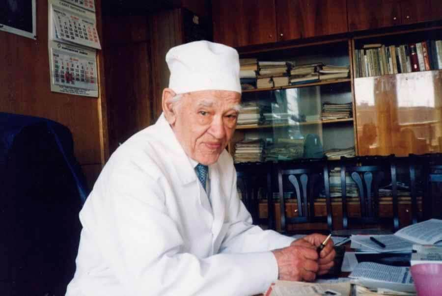
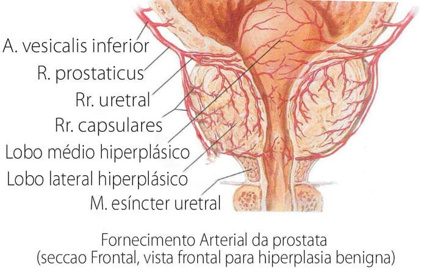
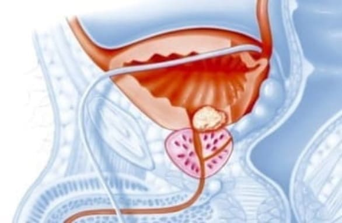
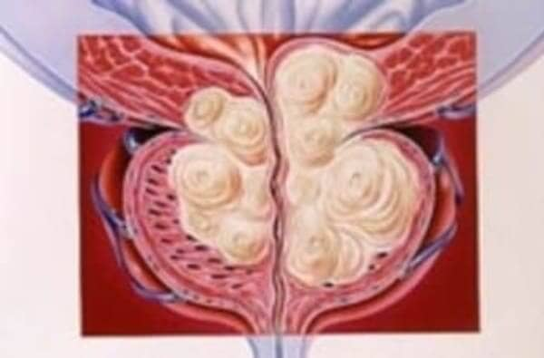
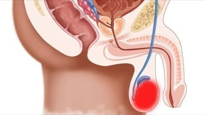
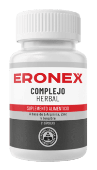
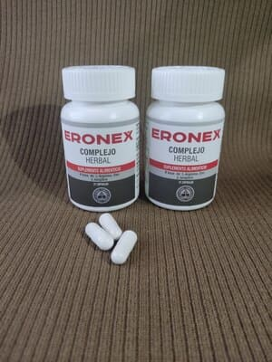
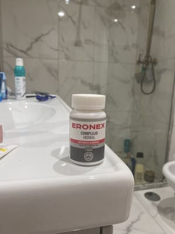
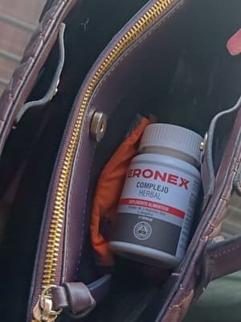

La edad - ¡no es un obstáculo para llevar una vida normal!
El académico de 109 años compartió su secreto para curar la prostatitis y mejorar
la salud de los hombres
Famoso urólogo mexicano, inventor, profesor, académico de la Academia Mexicana de
Ciencias y de la Academia Mexicana de Ciencias Médicas, ganador de numerosos premios estatales.
Leonardo Esteban se jubiló a los 70 años, pero mental y físicamente no era un jubilado.
Leonardo Esteban lleva más de 39 años viviendo de su pensión, y la Seguridad Social
prácticamente le odia! Hoy, el académico tiene 109 años, pero parece y se siente de
60.
Leonardo Esteban afirma que el secreto de la longevidad de los hombres reside en el buen
funcionamiento de la glándula prostática. Al fin y al cabo, no es casualidad que lo llamen el
segundo corazón del hombre: si funciona como la naturaleza manda y produce suficientes hormonas, puedes
vivir fácilmente 120 años o más sintiéndote completamente sano. Hoy, el antiguo
urólogo confirma sus declaraciones.
Nuestro corresponsal consiguió entrevistar al anciano. Leonardo Esteban describió
detalladamente su método para tratar la prostatitis y prolongar la vida.

Leonardo Esteban fue felicitado por su 109 cumpleaños por el propio Presidente de México. Foto
del lugar de trabajo de Leonardo Esteban
Periodista: Leonardo Esteban, usted ha afirmado en repetidas ocasiones que una
próstata sana es la base de una buena salud. ¿Por qué piensas eso?
Leonardo Esteban: Es sencillo. La próstata produce una enorme cantidad de
hormonas esenciales para la salud masculina. Algunas ayudan a las células a regenerarse, otros
controlan el sistema cardiovascular y otros son responsables del buen funcionamiento del cerebro. Sin
embargo, a medida que envejecemos, la próstata se contamina cada vez más, el fondo hormonal se
altera, aparece la prostatitis y la salud del hombre se deteriora drásticamente. Esto se debe a una
serie de factores, no sólo perjudiciales para la salud (por ejemplo, el tabaquismo, la mala
alimentación, la ecología, el sedentarismo), sino también completamente naturales (la
deposición de lípidos, por ejemplo, que se produce en todas las personas). Los vasos que
suministran a la próstata las sustancias necesarias se contaminan y dejan de cumplir su
función.
¿Qué son los vasos contaminados? Imagina tuberías llenas de óxido. ¿Qué
acaba pasando? Con el tiempo, la presión del agua aumenta y la propia agua se vuelve imbebible. Lo
mismo ocurre con los vasos sanguíneos. Cuando el colesterol u otras sustancias se depositan en ellos,
el volumen de los vasos disminuye (¡los vasos sucios son la causa principal de todas las
enfermedades!), la propia sangre se llena de impurezas y el riego sanguíneo se vuelve
insuficiente. Como resultado, las sustancias en descomposición producidas durante el proceso de la vida
comienzan a acumularse en la próstata. Se desarrolla prostatitis, seguida de adenoma y cáncer de
próstata.
El hombre empieza a envejecer. Su salud se deteriora drásticamente, y no sólo en la esfera
sexual. Si las limpias periódicamente, pueden vivir hasta 120 años. Al hacerlo, no
tendrás dolor -en ningún órgano- y tu cerebro funcionará bien. En otras palabras, la
limpieza vascular puede prolongar enormemente la vida y la salud. Y esto no es sólo una teoría. En
su momento, lo recomendé a mis pacientes y ahora lo practico yo mismo. Todos los que siguieron mis
consejos vivieron más que sus colegas.

Como puede ver, la próstata está simplemente rodeada de vasos sanguíneos. Si se
contaminan, la próstata empieza a funcionar mal inmediatamente.
Periodista: ¿Cuáles son exactamente las patologías a las que conduce
el deterioro de la próstata?
Leonardo Esteban: Como he dicho, todo el cuerpo sufre. Pero, por supuesto, los
órganos genitourinarios son los primeros en verse afectados.
funcionamiento incorrecto de la próstata provoca afecciones como:
1.
Prostatitis - una enfermedad progresiva: empeoramiento de la micción, ardor y lagrimeo.
Vaciado incompleto de la pared vascular de la vejiga. 2. Disfunción eréctil:
es el resultado de un mal funcionamiento de la próstata, que produce una gran cantidad de hormonas
responsables de la vida íntima del hombre 3. Infertilidad - las enfermedades
inflamatorias afectan en gran medida a la calidad del esperma masculino: disminuye la motilidad de los
espermatozoides, aumenta el porcentaje de los llamados espermatozoides defectuosos y todo ello conlleva
dificultades para intentar tener un hijo. 4. Cáncer de próstata. El mecanismo
patológico de la inflamación de la próstata se convierte tarde o temprano en un agrandamiento
canceroso.
Para ayudarle a comprender los peligros de la prostatitis, me gustaría mostrarle algunas
imágenes.

Prostatitis: esta enfermedad afecta al 85% de los hombres mayores de 40 años.

El adenoma de próstata es la siguiente complicación de la prostatitis. En el 47% de los
casos, conduce a la formación de un tumor canceroso en la próstata.

La epididimitis (inflamación dolorosa de los testículos) se produce cuando la
próstata inflamada a causa de una infección .
Estas cosas pasan en todas partes. En México mueren cuatro veces más hombres de cáncer
de próstata que en otros países europeos. Los médicos lo saben, saben que los métodos
utilizados actualmente para tratar la prostatitis son ineficaces, pero por alguna razón siguen
recetando medicamentos obsoletos. Sólo recetan fármacos que alivian las manifestaciones externas:
la inflamación aguda. Sin embargo, no curan la enfermedad, sino que tienen un efecto temporal. Es
necesario limpiar los vasos y establecer un suministro adecuado de nutrientes a la próstata. Por
cierto, en otros países occidentales todo el mundo lo hace desde hace más de medio siglo,
después de 35-40 años. Todo el mundo conoce este método. Por qué no lo tenemos sigue
siendo una gran pregunta para mí.
Periodista: ¿Hay algún síntoma que indique que ha llegado el momento
de purificar los vasos de la próstata?
Leonardo Esteban: Hay muchos síntomas de este tipo. Entre los principales, puedo
mencionar a todo un grupo:
- deseo frecuente de ir al baño - sensación crónica de
cansancio; - ardor y lagrimeo al orinar; - Dolores de cabeza
frecuentes; - problemas con el desempeño sexual; -
irritación ; - sensación de vaciado incompleto de la
vejiga; - dolores musculares
En algunos casos, estos problemas no se producen, pero eso no significa que la próstata no tenga
problemas. A partir de los 30 años, es necesario mantener la próstata sana y limpiar los vasos
sanguíneos al menos una vez cada cinco años. Esta es la única forma de mantener la plena salud
masculina hasta una edad avanzada.
El vaso sanguíneo se obstruye muy rápidamente con depósitos nocivos, sobre todo en
personas de más de cuarenta años. Y no es cuestión de que te guste la comida rápida. A
esta edad, un huevo o una simple salchicha bastan para depositar colesterol en la pared de una vena o arteria.
Cuanto mayor es una persona, más obstruidos están sus vasos sanguíneos.
Periodista: ¿Puede revelarnos su secreto para purificar la próstata?
Leonardo Esteban: No lo oculto. Antes, yo mismo buscaba las hierbas, las recogía
en zonas ecológicamente limpias, las compraba en el mercado o las encargaba por Internet. Yo mismo
preparé infusiones y elaboré composiciones para depurar la próstata. Todo este proceso
llevó mucho tiempo, varios meses para la preparación completa. Ahora no tengo que trabajar tanto ni
perder tanto tiempo en ello. Porque hace poco mis colegas del Instituto de Investigación Urológica
de México crearon un remedio muy bueno y económico para el tratamiento de la prostatitis. Se llama
Eronex. Se diseñó para tratar las complicaciones de la prostatitis, pero la
normalización se produce al limpiar los vasos prostáticos. Por lo tanto, para nuestros fines, es la
más adecuada.

Eronex es un remedio excelente que puede restablecer la salud de la próstata, incluso en
casos descuidados, en 1-2 semanas de uso regular.
También me gustaría destacar que este remedio no contiene productos químicos, sino
sólo extractos de plantas altamente concentrados que son útiles para limpiar los vasos
sanguíneos, por lo que no sólo no es perjudicial para el organismo, sino que es muy favorable.
Aún hoy, me contactan pacientes crónicos, incluso para el tratamiento de la prostatitis. Esta
es la única medicina que he estado recomendando últimamente. Ayuda a todo el mundo y lo hace muy
bien.
Las estadísticas oficiales, obtenidas a partir de los resultados de estudios clínicos,
están disponibles en el sitio web del Instituto de Investigación Urológica de México. En
total, unos 2.000 pacientes participaron en el estudio. Todos ellos siguieron tratamiento con Eronex.
Resultados de la investigación:
Normalización de la producción hormonal - 99% de los individuos
estudiados
Eliminación de la estasis prostática a partir de la secreción prostática -
97% de los sujetos estudiados
Limpieza completa de los vasos prostáticos con un ciclo - 98% de los sujetos
estudiados
Aumento de la libido, mejora de la función sexual - 99% de los sujetos
estudiados
Mejora del estado de salud general - 100% de los individuos estudiados
Ningún efecto secundario debido a la toma del remedio - 100% de los individuos
estudiados
IMPORTANTE: Los estudios han demostrado que
e - son el mejor momento para tratar la próstata. Al estabilizar la temperatura media, se
aceleran los procesos metabólicos del organismo y se potencia el efecto del remedio. El tratamiento es un
37% más rápido que en otras épocas del año.
Periodista: ¿Cuánto cuesta Eronex y dónde puede encontrarse?
Leonardo Esteban: Probablemente sepa que yo mismo soy pensionista y que muchos
medicamentos me resultan bastante caros. Por eso no recomiendo un medicamento caro. Eronex es un producto muy
económico, sobre todo ahora que está a la venta a través del programa de asistencia.
El fármaco se ha incluido en el programa de prostatitis financiado por el Estado. En el marco de
este programa, el remedio se distribuye en México con un descuento de hasta el 50%.
Participe en la promoción y reciba un descuento en su compra de Eronex de hasta
el 50%.
adivina la puerta detrás de la cual hay un 50% de descuento
1180MXN 590MXN
Rellene el formulario para obtener "Eronex
" con un 50% de descuento
Sólo tienes que introducir tu nombre y número de teléfono. Dese prisa!
Existencias restantes: 10 : 00
El cifrado se utiliza para garantizar la protección de sus datos.
¡Felicidades!
¡Puede obtener Eronex 590MXN con un 50% de descuento
!
Recomiendo el tratamiento cada 1-2 años para mantener la salud de la próstata. Es
especialmente importante hacerlo en el caso de las personas mayores. En este caso, puede mejorar mucho su
salud y olvidarse de la prostatitis para siempre. Al fin y al cabo, una próstata sana es la clave de la
longevidad masculina.
Periodista: Muchas gracias, Leonardo Esteban, por esta entrevista tan detallada.
Nota del editor: En una conversación personal con Leonardo Esteban, nos confesó que sigue
plantando de todo en su jardín y ayudando a sus hijos, ya jubilados. Si no lo hubiera hecho, según
el académico, habría muerto hace mucho tiempo, como todos sus contemporáneos.
Carlos Hernández - hace 19 horas
Gracias por la información detallada. Llevo mucho tiempo buscando un remedio para la prostatitis,
ahora sé exactamente lo que necesito. Lo que más me gusta es que el producto es muy barato, por lo
que estoy muy satisfecho con su calidad.
Daniela Nieves - hace 18 horas
Agradezco mucho la información sobre este remedio. Mi marido tiene problemas de próstata
desde hace mucho tiempo, la última vez que tuvimos relaciones sexuales fue hace unos dos años.
Incluso tuvo un ataque de nervios por ello. Con el programa obtuve un descuento del 50%.

José Martínez - hace 15 horas
He empezado el curso de Eronex, cuando lo termine pondré detalles e información. Tengo miedo
de sacar conclusiones precipitadas, pero ir al baño se ha vuelto realmente más fácil.
Leonardo Esteban - hace 14 horas
Todo irá bien, seguiré tomando Eronex según las indicaciones. El resultado sólo
puede ser positivo. Saludos. Leonardo Esteban
Miguel Ángel López - hace 12 horas
¡Gracias al productor de Eronex! Probado y comprobado, ¡la prostatitis ha desaparecido!
Seguí el ciclo de consolidación, aunque los primeros resultados aparecieron al cabo de una semana:
¡¡¡por fin pude orinar con normalidad!!!
Laura Moreira - hace 10 horas
Como médico, puedo decirle que nunca he visto que el masaje prostático ayude a curar la
prostatitis. Es sólo una forma de ganar de dinero y es humillante para un hombre. Quiero advertirte que
sólo debes pedirlo a través de la web oficial, así debe ser el envase.

Tania Ortiz - hace 8 horas
¿Cómo puedo pedir Eronex para mi marido?
Juan García - hace 8 horas
Tania, hay puertas justo arriba. Abre una de las
puertas, consigue el descuento del 50% y se abrirá un formulario de pedido que podrás rellenar. El
programa estatal está en marcha, así que haga su pedido rápido.
Tania Ortiz - hace 8 horas
¡Gracias, Juan! Ya lo he pedido. ¿Sabe cuánto tarda la entrega?
Juan García - hace 7 horas
Creo que llegará en tres o cuatro días.
Vanessa Alves - hace 6 horas
¿Cómo se compra Eronex? Lo necesito de verdad, mi marido está sufriendo por las
noches.
Teresa Torres - hace 6 horas
No puedo creer que el producto sea tan eficaz. ¡Mi marido ha probado tantas cosas!
Francisco Pérez - hace 6 horas
Pruébalo, seguro que te ayuda. Sufrí durante años, tomé mucha medicación.
Afortunadamente, descubrí Eronex. Lo pedí a través del
sorteo oficial, seguí el ciclo y me olvidé de la prostatitis.

Alejandro Gómez - hace 5 horas
¿Servirá de algo? Estoy harto de ir al médico, sus recetas no sirven para nada,
sólo para malgastar el dinero.
Ana Santos - hace 5 horas
Mi marido se negó a recibir el masaje después de la primera vez. Pidamos algo de Eronex,
necesitamos curarnos.
Rosa Ruiz - hace 4 horas
Creía que la información sobre el descuento del 50% en productos era un bulo. Resulta que es
verdad. Yo personalmente pedí Eronex para mi marido - hice un pedido a través
del sorteo, me llamaron muy rápido y confirmaron el pedido.
Ahora estoy esperando la entrega, realmente espero que la medicina ayude, no puedo soportar verlo
sufrir.
Carmen Pérez - hace 4 horas
Me doy cuenta de que no somos los únicos con estos problemas, pero gracias a Dios encontré
la pagina web del fabricante de Eronex hace aproximadamente un mes. El urólogo se sorprendió
cuando mi marido siguió el ciclo: el tamaño de su próstata volvió a ser el que era antes
de la inflamación. Y eso sin antibióticos ni otros medicamentos.
Fernando Morales - hace 3 horas
Mi mujer pidió Eronex. La entrega fue rápida. Lo más importante es que la medicina me
ha ayudado, me siento 20 años más joven.